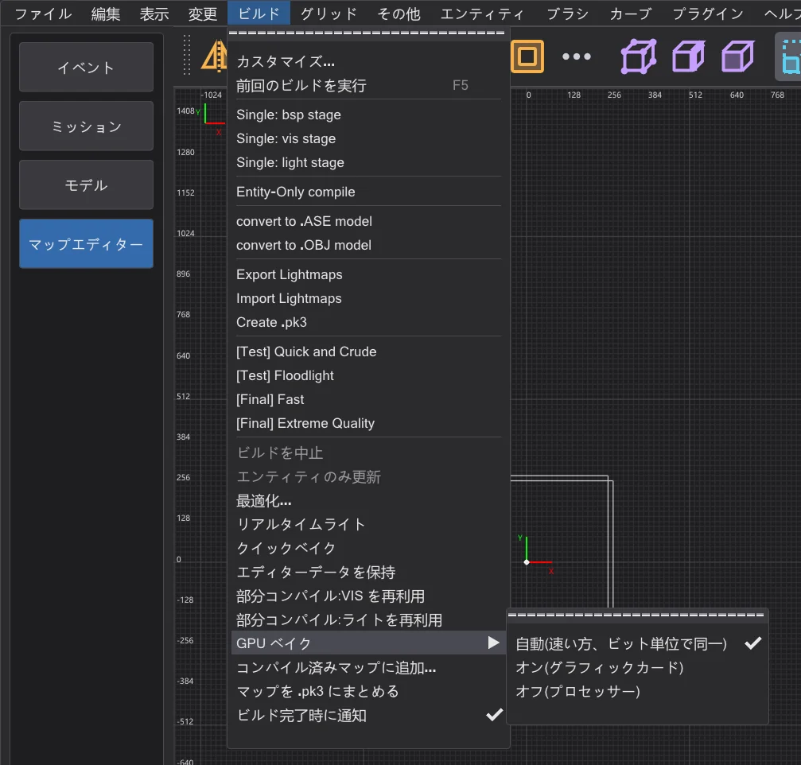
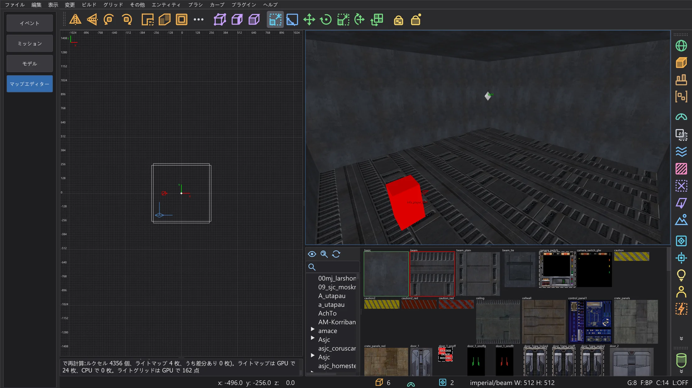

マップエディター:GPU ベイク
マップの光をすべてグラフィックカードで計算します(ライトマップ、バウンス、ライトグリッド)。CPU とバイト単位で同じ結果で、大きなマップではずっと速くなります。
ビルド > GPU ベイク(NetRadiant-Custom にはありません)は、bhed_q3map2 が各 -light ステップの光をどこで計算するかを決めます:自動(速い方、ビット単位で同一)(既定)、オン(グラフィックカード)(スイッチ -bhedgpubake)、オフ(プロセッサー)。コンパイルされたマップはバイト単位で同じで、グラフィックカードは速いだけです。選択は保存されます(設定 BhedGpuBakeMode)。
自動(速い方、ビット単位で同一) は、結果がビット単位で同一(倍精度で計算できる)で、速いと見込まれる場合だけグラフィックカードを使います(大きなマップやバウンス)。小さなマップや大きなマップでの -samples 4 はプロセッサーで計算し、倍精度に対応しないグラフィックカードは選ばれません。さらにマップとライトのスイッチごとに前回のプロセッサーとグラフィックカードの所要時間を覚え、以後は速い方を選びます(クイックベイクも同様)。選択と理由はコンソールに表示されます。

マップのビルド中は、ビルドの進行状況ウィンドウとステータスバーにグラフィックカードの名前が表示されます。ビルドの後、コンソールに差分レポートが出ます。64 枚に 1 枚のライトマップを CPU でもう一度計算し、ルクセルごとに比較します。最後のレポートは GPU ベイク のツールチップにもあります。この項目がオンなら、リアルタイムライトのクイックベイク(マップエディター:速度とリアルタイムライト)もグラフィックカードを使います。

グラフィックカードで行う処理#
- ライトマップ:各ルクセルについて、各ライトの寄与とその影の光線、スタイルの確認、
-samplesの適応スーパーサンプリング(複数段も)、-filterのフィルター、ライトを順番どおりに足し合わせる処理。 - バウンス(
-bounce):ラジオシティが作る面光源を含めて、すべての回。 - ライトグリッド(モデルとプレイヤーの光):すべてのグリッド点とすべてのライト。
- これまでどおりプロセッサーで行う処理:読み込み、ライトのリスト、頂点ライティング、バウンス用ライトの作成、継ぎ目、保存と .bsp の書き出し、そしてグラフィックカードで正確にできないもの(下記)。
結果が同じになる理由#
グラフィックカードは普通、プロセッサーと少し違う計算をします。そのため、ほかの GPU ライトマッパーでは光がわずかに変わります。bhed_q3map2 は、プロセッサー上の q3map2 と同じ計算を同じ順序で行います。
- すべての演算をプロセッサーとまったく同じように丸めます(積和をまとめない)。割り算は整数演算で正確に丸めます。
- q3map2 はベクトルの正規化と平方根を倍精度で行います。グラフィックカードは特に精密な float 演算で同じ丸め結果を決め、まれな際どい場合だけ倍精度を使います。
- 影の光線は q3map2 自身のトレースツリーをその許容値で進み、スーパーサンプリングはプロセッサーと同じ順序で行います。
- スレッドがたまたま終わった順に足し合わせることはありません。各ルクセルはライトをリストの順番で足します。
グラフィックカードで正確に計算できないもの(テクスチャが必要なアルファ影とライトフィルター、安全な範囲を外れた値、有限でない結果)は、そのライトマップ(またはグリッド点)をプロセッサーが計算します。ビルド中にグラフィックカードが失敗したり Windows にリセットされたりした場合は、残りをプロセッサーが計算します。グラフィックメモリーに収まらないライトマップは、ライトのリストを分けて計算します。
どれだけ速いか#
Intel i9-14900HX(32 スレッド)と NVIDIA RTX 4070 Laptop GPU のノートパソコンで、-light ステップ全体を測定しました(3 回の中央値)。プロセッサーは 32 スレッドすべてを使います。GPU ベイクでも上に挙げた部分にはプロセッサーが必要なので、ライトが多くバウンスのある大きなマップで効果が最も大きくなります。
| マップ | スイッチ | プロセッサー | グラフィックカード | 一致したルクセル |
|---|---|---|---|---|
| mp__duel1 | -fast -patchshadows -samples 2 -filter -bounce 8 | 1.8 s | 1.2 s | 100 % |
| mp__duel1 | -fast -patchshadows -samples 2 -filter | 0.4 s | 0.4 s | 100 % |
| mp__duel1 | -fast -patchshadows -samples 4 -filter -bounce 2 | 1.1 s | 0.8 s | 100 % |
| md_ch_ben | -fast -patchshadows -samples 2 -filter -bounce 8 | 2.5 s | 2.2 s | 100 % |
| md_ch_ben | -fast -patchshadows -samples 2 -filter | 1.7 s | 1.6 s | 100 % |
| md_ch_ben | -fast -patchshadows -samples 4 -filter -bounce 2 | 2.3 s | 2.1 s | 100 % |
| kejim_post | -fast -filter -super 2 | 8.5 s | 6.2 s | 100 % |
| kejim_post | -fast -filter -super 2 -bounce 2 | 48.8 s | 20.0 s | 100 % |
| kejim_post | -fast -filter -super 2 -samples 3 | 9.0 s | 7.3 s | 100 % |
| md_am_sith | -fast -patchshadows -samples 2 -filter -bounce 8 | 62.0 s | 31.3 s | 100 % |
| md_am_sith | -fast -patchshadows -samples 2 -filter | 31.7 s | 12.1 s | 100 % |
| md_am_sith | -fast -patchshadows -samples 4 -filter -bounce 2 | 52.9 s | 28.0 s | 100 % |
| duel_mygeeto | -fast -patchshadows -samples 2 -filter -bounce 8 | 74.3 s | 47.1 s | 100 % |
| duel_mygeeto | -fast -patchshadows -samples 2 -filter | 31.6 s | 16.6 s | 100 % |
| duel_mygeeto | -fast -patchshadows -samples 4 -filter -bounce 2 | 67.2 s | 101.3 s | 100 % |
-samples 4 の duel_mygeeto(101 秒対 67 秒)。多くの影の境界での深いスーパーサンプリングはルクセルごとに分岐が異なり、グラフィックカードはそれが苦手です。-samples 2(Build メニュー)では、測定したどのマップも同じかそれ以上に速くなりました。コマンドライン用#
-bhedgpubake:光をグラフィックカードで計算(-lightと一緒に)。-bhedgpubakeauto:プロセッサーとグラフィックカードの速い方(グラフィックカードはビット単位で同一の場合のみ)。-bhedgpubakezeiten <CPU ms> <GPU ms>は前回の計測時間を渡します(0 = 不明)。-bhedgpubakecheck N:N 枚に 1 枚のライトマップを CPU でも計算(既定 64、ライトとルクセルの組が 100 万まで。1はすべて、0はなし)。レポートは<マップ>.bhedgpu.txtにも書かれます。-bhedgpuadapter Nまたは名前の一部:使うグラフィックカード(指定しなければ最速のもの)。
-bhedgpu と一緒に -bhedgpudxr)。影の光線を約 2 倍速く処理しますが、q3map2 の許容値がないためヒットの約 0.15 % を見逃し、トレースツリーの固い部分も見えません。しかも影の光線は GPU ベイクの時間の 7〜8 % にすぎません。そのためベイクには使っていません。